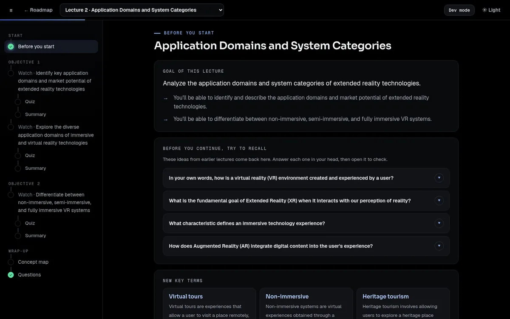
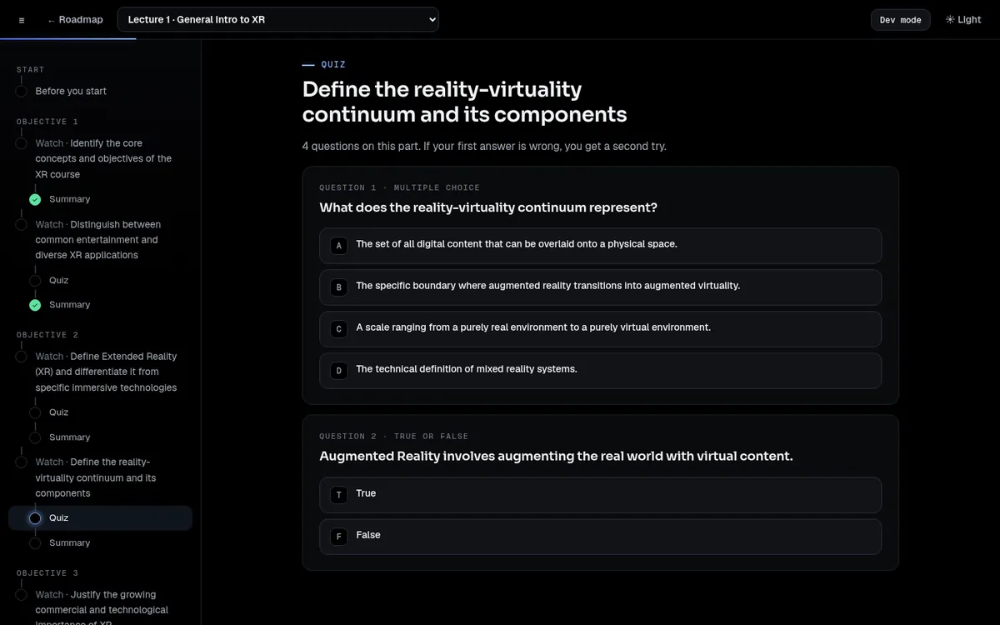
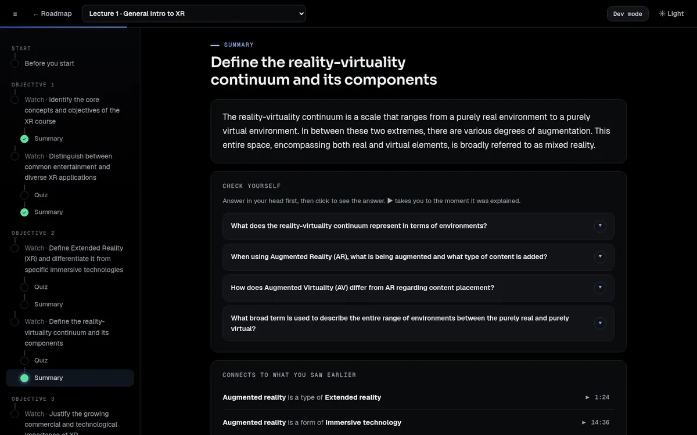
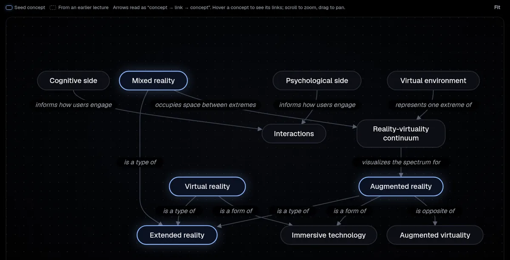
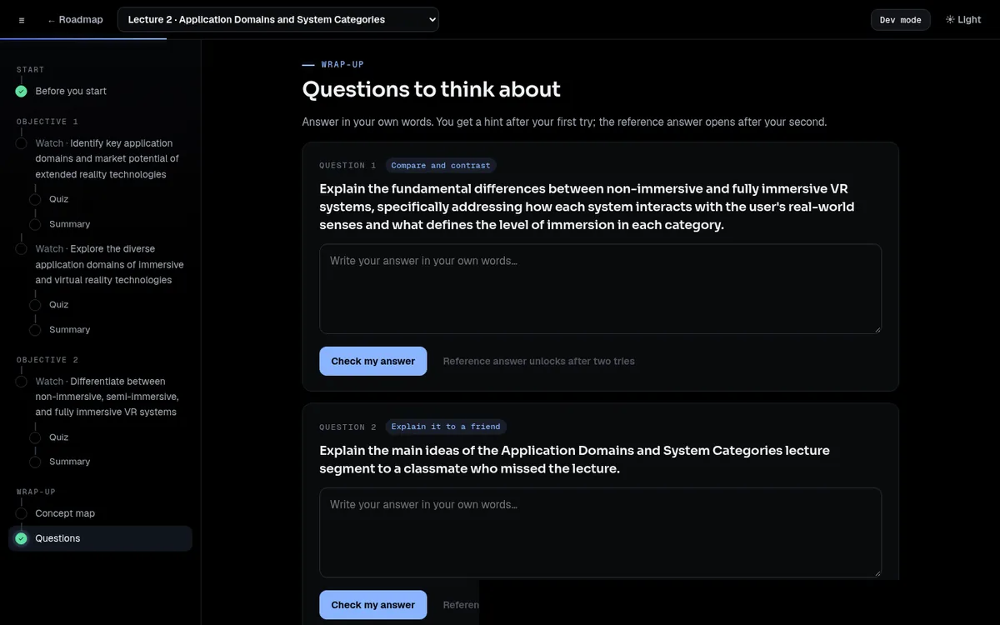

From lecture video to guided course
The LIR pipeline reads a course's subtitles and builds everything a learner needs around each lecture: what to recall first, short clips to watch, a quiz and a summary after each clip, a concept map and open questions at the end. It runs on one 12 GB GPU, and every item it writes points back to the sentence of the lecture it came from.
Every number and example on this page comes from Foundation for Virtual and Augmented Reality Systems (NPTEL), as built on 31 October 2026, except NPTEL vs MIT, which compares it with MIT 6.7960 Deep Learning.
Why it exists
Watching is not the same as learning
Open courses put thousands of hours of lectures online. Most learners watch them the way they watch anything else: start to finish, without stopping. It feels like understanding, but little of it stays.
Learning research says what helps. Bring back what you already know before something new. Take the material in short pieces. Pull ideas back out of memory instead of rereading them. Explain things in your own words and connect them. The ICAP framework orders it simply: passive watching teaches least, active work (answering, highlighting) more, and constructive work (explaining, mapping, applying) the most.
The catch is effort. Writing a recall question, a quiz and a recap for every few minutes of video, plus questions and a concept map per lecture, takes an instructional designer hours per lecture. Few courses get it.
The idea: generate that layer automatically from the transcript, check every item, and keep a record of why each one exists, so a course team can trust it or fix it.
One lecture, before and after
Lecture 1 of the VR course is a 33-minute video. The pipeline cuts it into seven parts at topic changes, groups them under three objectives, and turns each part into a short sequence of pages.
A guided path through any recorded course
Short clips instead of hour-long videos, questions that make you recall and explain, and a link back to the exact moment in the video whenever you need to see something again.
A complete first draft to review
Every quiz item, summary and question is already written, checked and tied to its source sentences. Dev mode in the viewer shows why each item exists and what the judge said about it.
One file format, any front end
The LIR describes a lecture as an ordered list of learning phases with recorded intent. The web viewer is one renderer; a VR classroom or an analytics tool can read the same files.
The learner's lecture
A lecture is a sequence of pages. The learner moves through them with Next; the contents list on the left shows where they are. Answers are never handed over before an attempt.
Know where you are going, and what you need
The lecture goal and its objectives come first, then a few ideas from earlier lectures that this one builds on. The learner answers each in their head and opens it to check; each answer links back to where it was taught. New key terms close the page.

One part of the lecture, nothing else
The player plays only this part's clip, with the viewer's own controls. They float over the video and fade away while it plays. Captions are off by default. With captions on, clicking a caption highlights that sentence; highlights come back in the summary and at the end of the lecture.
Pull it back out of memory
One to four questions on what the part taught: multiple choice, true or false, or yes or no. A wrong multiple-choice answer gets a second try before the explanation appears. Each question tests one key point of the part, and none asks what "the lecture said".

A recap you check yourself on
A short recap, then one question per key point. The learner answers in their head and clicks to see the answer, with a ▶ link to the moment it was explained. Below that: how this part connects to earlier concepts, and the learner's own highlights.

Connect the ideas
The learner starts from the lecture's key concepts, adds others, draws links and labels them. Checking the map scores it against the reference and unlocks the reference map, which draws itself in. Hovering a concept lights up its links and neighbours.

Explain it in your own words
Open questions: explain why, compare, apply to a new case, fill in steps, troubleshoot. The answer is scored against key points, not one model answer. The first try gets a level and a hint; the second shows which key points are covered. The reference answer opens after two tries.

The viewer is true black by default, with a light mode in the top bar. It shows learners only learning material; build details appear only in dev mode.
Each page serves a named principle
Every page and every item in the LIR records the principle it serves, its ICAP mode, its Bloom level and the rule that chose it. That record is what dev mode shows.
| Page | What the learner does | Principle | ICAP |
|---|---|---|---|
| Before you start | Reads the goal; recalls earlier ideas | Advance organizer, prior-knowledge activation, retrieval practice | active |
| Watch | Watches one part; highlights captions | Segmenting | passive → active |
| Quiz | Answers 1–4 questions, second try on a miss | Retrieval practice | active |
| Summary | Answers in their head, then reveals | Summarizing, retrieval practice | active |
| Concept map | Builds and labels a map | Concept mapping | constructive |
| Questions | Writes explanations, revises after hints | Self-explanation, elaboration, transfer, generative learning | constructive |
How it is built
Compile once, render anywhere
The pipeline works like a compiler. Its source is a course's subtitle files; its output is the Lecture Intermediate Representation (LIR): one JSON file per lecture and one for the course. Nothing at viewing time calls a language model. The viewer only reads the files, plus a small sentence-embedding model on the CPU to score open answers.
A lecture's LIR is an ordered list of phases: a primer, then for each part a segment phase (the clip) and an active phase (quiz and summary), then a constructive phase (concept map and questions). A renderer walks the list and draws each phase by its type.
A lecture you can query, not only play
The viewer is one reader of the LIR. The files are also a structured record of what each lecture teaches, where in the video it teaches it, and how it connects to the rest of the course. Every part of that record has an ID and points back to sentence IDs, and sentence IDs point to times in the video. So a program can answer "where is this taught?" or "what does this part cover?" by following IDs, without reading the transcript and without calling a model.
course_goals → lecture IDs
concepts: name, aliases, definition, introduced {lecture, segment, sentence, t}, mentions [{lecture, segment, sentence IDs}]
edges: src → rel → dst, label, evidence sentence IDs
concept_embeddings: one 768-d vector per conceptsentence_range, start/end (s), sub-goal, content type, objective, key points (with sentence IDs), key terms, concept_idsmedia/<course>/Lxx.mp4 or YouTube ID; a segment is the clip [start, end]What was covered, in one lookup
Load the course once and build a few dictionaries; one pass over the VR course (course.json and 63 lecture files) takes 0.18 s. After that, the questions below are each a dictionary lookup, so their cost does not grow with the course. Two of them are not constant time, and the table says so.
| Question | Where the answer is | Cost | Example (VR course) |
|---|---|---|---|
| Was a concept taught, and where first? | concept[id].introduced | O(1) | Augmented virtuality → L01 · S4 · sentence 121 · 16:33 |
| Everywhere the course comes back to it | concept[id].mentions | O(1) | Field of view → L06, L11, L15, L28, L49, L57 |
| What does one part cover? | segment[(lecture, id)]: sub-goal, key points, concept IDs | O(1) | L01 · S4 → "Define the reality-virtuality continuum and its components", 4 key points, 5 concepts |
| Which parts serve a learning objective, or a course goal? | roadmap.objectives[].segment_ids, course_goals[].lecture_ids | O(1) | L01 · O2 → S3, S4 |
| What does a learner know after lecture k? | output/<course>/state/state_Lxx.json (build file), or concepts whose introduced lecture ≤ k | one file read | after L01: 13 concepts |
| What is being said at time t? | binary search over sentence start times | O(log n) | L01 at 16:40 → "This is just the opposite of augmented reality …" |
| Is a topic named in free text covered? | cosine similarity against concept_embeddings | one pass over 883 vectors | a few milliseconds on a CPU |
concept = {c["id"]: c for c in course["concepts"]}
by_name = {n.lower(): c["id"] for c in course["concepts"] for n in [c["name"], *c["aliases"]]}
segment = {(l, s["id"]): s for l, L in lec.items() for s in L["segments"]}
concept[by_name["augmented virtuality"]]["introduced"]
# {'lecture_id': 'L01', 'segment_id': 'S4', 'sentence_id': 121, 't': 993.299}
s = segment[("L01", "S4")]; a, b = s["sentence_range"]
lec["L01"]["sentences"][a:b + 1] # the 18 sentences of the part (sentence ID = list index)
s["start"], s["end"] # 930.721, 1092.999 → the clip 15:31–18:13Fetching a lecture part by part
A segment is a complete, addressable unit: (course, lecture, segment) gives its sentence range, its
start and end times, and everything generated for it. The text is a slice of the sentence list, and the video is the
clip from start to end. serve.py answers HTTP range requests, so a player can
seek straight to the clip in the local file, or pass the times to YouTube. The viewer plays each part this way, as its
own clip. Because stage 1 cuts only where the instructor finishes a topic, each part makes sense on its own.
As a source for retrieval (RAG)
The pipeline does not include a retriever yet. The format already provides what one needs. Each segment is a natural chunk: a complete topic, about 4 minutes long, with a median of 457 words in the VR course and 644 in MIT 6.7960. Its metadata says what it is about, and every sentence in it has an ID and a time. A chunk for L01 · S4, built from fields of the LIR without generating anything new, looks like this:
{"id": "nptel-virtual-and-augmented-reality/L01/S4",
"text": "[113] But before that, let me draw your attention to … [130] … is broadly sometimes referred to as mixed reality.",
"subgoal": "Define the reality-virtuality continuum and its components",
"key_points": ["The reality-virtuality continuum is a scale ranging from a purely real environment to a purely virtual environment.", …],
"concepts": ["Augmented reality", "Mixed reality", "Reality-virtuality continuum", "Virtual environment", "Augmented virtuality"],
"lecture_index": 1, "objective": "O2", "content_type": "definition",
"start": 930.721, "end": 1092.999, "video": "media/nptel-virtual-and-augmented-reality/L01.mp4"}Boundaries are where the instructor finishes a goal (WindowDiff 0.09 against a human annotator), not every 512 tokens. A retrieved chunk does not start or stop mid-explanation.
Every chunk, key point and definition carries sentence IDs, and sentence IDs carry times. An answer can quote the exact sentences and offer "▶ watch 15:31–18:13".
Lecture index, objective, content type and concept IDs are fields, so a query can be limited to "definitions in lectures 1–5" before any similarity search. Limiting to lectures ≤ k keeps the no-look-ahead rule for a learner who is at lecture k.
Course goals → lecture goal → objectives → sub-goals → key points → sentences. A retriever can match a short summary first and then open the sentences under it.
"AR", "augmented reality" and "Augmented Reality (AR)" are one concept ID with aliases, so a question in any form finds the same parts. Concept embeddings are stored. Segment and key-point embeddings would be computed when the index is built; only open-question key points have stored embeddings today.
Every generated item records its model, prompt version, input hash and the judge's verdict, so retrieved text can be traced to how it was made, or filtered to judge-approved items only.
Why this representation
| Property | What it allows |
|---|---|
| Built once, read many times | No model runs when a learner opens a lecture; the viewer, a VR classroom, an analytics script or a retriever all read the same files. |
| Everything has an ID | Lecture, segment, objective, key point, concept, quiz item and sentence can each be addressed, linked to and stored against (the viewer stores a learner's highlights by sentence ID). |
| Grounded in sentence IDs | Any item can be checked against the transcript, and any item can jump the video to the moment it came from. |
| Course-level concept registry | One place to ask where a concept is introduced, where it comes back, what it links to, and what a learner should know before lecture k. |
| Ordered phases with intent | A renderer can follow the order without knowing any teaching rules, and a reviewer can see which principle and rule chose each activity. |
Validated schema (lir_schema.py) | Every file passes the same Pydantic model, so a consumer can rely on fields being there and having the right types. |
| Plain JSON, cached build | Files diff cleanly in git; a rebuild only recomputes what changed, and the answer cache rebuilds the LIR on another PC without a GPU. |
Each call does one job on a short input, usually one part of a lecture, and its answer must fit a JSON schema. A 4B model does well at narrow jobs.
The model writes text. Code merges, counts, assigns timestamps, picks activity types by rule and shuffles where the right answer goes. The model never writes a time or an ID.
Every key point, term, question and link carries the sentence IDs it came from, so it can be checked, and the viewer can jump to it.
Every item says which principle it serves and which rule chose it, so a reviewer can see why it is there.
Each stage runs over every lecture as one batch before the next starts. Nothing decides its own next step, so a run is predictable and cacheable.
Lecture k only knows lectures 1 to k. Code checks that no item mentions a concept from a later lecture.
Seven stages, three workers
The generator (Gemma 4 E4B, 8-bit, on llama.cpp) writes. The
judge (gpt-6-luna on the OpenAI API) checks. The
embedder (a sentence-embedding model on the CPU) matches concepts and scores
answers. Code does everything else. Bars show each stage's time on the full VR course.
Transcripts
Segment
Annotate
Goal hierarchy
Course knowledge
Generate
Judge and repair
Assemble
Each stage sends all its calls for all lectures at once. The local server has 32 slots sharing one KV cache (f16, not quantized); the client admits as many requests as the cache can hold, about 11 at a time for most stages (see Scheduling). Every answer is cached by a hash of its prompt and model, so a rerun only recomputes what changed: a prompt edit in stage 5 reruns stage 5 and the judging of its items, nothing else.
A summary of each stage. Part 4 follows one lecture through every model call, with the real prompts and answers, call counts and scheduling.
0 · Transcripts
Each subtitle cue is cleaned and merged into sentences: a cue that ends mid-sentence joins the next. Every sentence gets an ID and keeps its times, and everything later cites these IDs. Lectures without a subtitle file use the official transcript, aligned word by word to YouTube's automatic captions for timing. The VR course has 12,028 sentences.
1 · Segment
One call per lecture, using the best prompt from the segmentation study (WindowDiff 0.09 against a human annotator, against 0.28 for TextTiling). The model returns the sentence numbers where a new topic starts; code sorts them, merges parts under 2 minutes into a neighbour, and flags parts over 12 minutes. The VR course has 388 parts, 4.7 minutes long on average; 16 are flagged as long.
2 · Annotate
Two narrow calls per part. The first writes the part's goal (verb first), its content type, and 2–5 key points, each tagged as being about the subject or about the course itself. The second picks the key terms a learner should know and defines each in plain, self-contained words. Code checks that cited sentences are inside the part, that each definition starts with its term, is not circular and is not a bare abbreviation.
- The reality-virtuality continuum is a scale ranging from a purely real environment to a purely virtual environment. [116–118]
- Augmented Reality (AR) involves augmenting the real world with digital or virtual content. [120, 122]
- Augmented Virtuality (AV) involves augmenting a virtual world with real-world content. [120, 121, 123]
- Mixed Reality (MR) is the broad term for the entire space between the purely real and purely virtual environments. [126, 130]
Key term · Augmented virtuality: Augmented virtuality is the opposite of augmented reality, where a virtual world is enhanced by incorporating real-world content.
3 · Goal hierarchy
A small call per lecture sees only the title and the parts' goals. It groups consecutive parts into 2–6 objectives, each phrased "You'll be able to …", and writes one lecture goal. Course goals are built bottom-up from the lecture goals; the VR course has 5.
4 · Course knowledge
This stage is what lets a lecture refer back to earlier ones. Terms from every lecture are merged into one concept registry: the same name or abbreviation means the same concept; otherwise embedding similarity decides (≥ 0.93 the same, 0.78–0.93 the model is asked yes or no, below that a new concept). One call per lecture then finds typed links between concepts: part of, example of, used in, leads to, contrasts with, prerequisite of, each with a short label and evidence sentences. Finally a snapshot of the registry is saved after every lecture; lecture k reads only its own snapshot.
How the course's knowledge grows
Concepts and links known after each lecture.
5 · Generate
Code decides what to make; the model writes the words. All calls for all lectures go out together.
Recall items (Before you start)
Code ranks earlier concepts by how this lecture builds on them: first those linked into its concepts as prerequisite of or used in, then any other link, then concepts it mentions again. It keeps up to four. The model writes a question about what each concept means, never what an abbreviation stands for, and a short answer.
Virtual reality creates a fully simulated environment where the user can interact with the digital world, making them feel as if they are in a completely artificial setting.
Quizzes
Only subject key points are quizzed; a part with none gets no quiz. The model decides how many questions the part deserves (1 to 4, never padded), which key point each tests and its type. Code rejects questions about the lecture rather than the subject ("according to the lecture …") and places the right answer at random.
Summaries
One call writes a 2–3 sentence recap and one check-yourself question per subject key point, with a short answer. Code attaches the jump link from the key point's sentences, and the links to earlier concepts from the graph.
It is a scale that places the purely real environment at one end and the purely virtual environment at the other.
Concept maps
Built by code only. The reference map is the lecture's concepts plus earlier concepts one link away, cut to a readable core: links that come from this lecture or touch a concept it introduces, at most 14 concepts, at most 4 of them from earlier lectures. VR reference maps have 9.1 concepts and 6 links on average.
Open questions
Code picks question types from a rule table, then one call per question writes the prompt, a reference answer and 3–5 key points with keywords for scoring.
| If the lecture has … | Question type | Principle |
|---|---|---|
| a derivation or procedure | Fill in the steps | worked-example completion |
| a contrasts-with link or a comparison part | Compare and contrast | elaboration |
| a mechanism explanation | Explain why | self-explanation |
| a worked example or application | Apply it to a new case | transfer |
| a procedure with a failure mode | Troubleshoot | elaboration, transfer |
| always (fallback) | Explain it to a friend | generative learning |
Key points a good answer covers
- ILD is the difference in sound magnitude. keywords: difference, sound, magnitude, heard, each
- Acoustic shadow causes magnitude difference. acoustic shadow, magnitude
- ITD is the difference in sound arrival time. difference, sound, arrival, time
- Distance between two ears causes time difference. distance, ears, difference, arrival, time
6 · Judge and repair
See How items are checked. This stage also calibrates the answer scorer: the generator writes a good, a partial and a wrong answer to a sample of questions, and code searches the two scoring settings so good answers score high and wrong ones low. For the VR course: m = 2 keywords, τ = 0.70, 64% agreement on 39 answers (mean score: good 0.84, partial 0.48, wrong 0.31).
7 · Assemble
No model calls. Code writes the files, validates them against the Pydantic schema in lir_schema.py,
checks that nothing refers to a later lecture and that recall only points backwards, and stores one embedding per
open-question key point and per concept.
Three layers
Constrained output
Every answer must match its JSON schema while it is generated, so counts, types and lengths always hold.
Rules after each call
Cited sentences inside the part, verb-first goals, distinct options, no circular definitions, no questions about the lecture. A failure goes back with the error, up to 2 retries.
A stronger model reads everything
Is it true to the transcript, answerable from the part, worth learning? Rejected items are rewritten with the judge's reason and judged again; what still fails is dropped.
The judge asks each item's own questions. For a key term: is it worth learning (a concept the lecture teaches, not a passing mention or a bare abbreviation), is the definition faithful, and is it useful to a learner? For a quiz item: is it worth asking, answerable from the part alone, and is the marked answer right and the only right one? Links, recall items, summaries and open questions get their own checks. A link the judge finds backwards is flipped by code.
What the judge decided
Share of each kind of item; hover a bar for the counts.
Table view
| Item | Judged | Passed first | Rewritten | Replaced | Dropped |
|---|
Key terms and links are dropped most, by design: the judge removes terms that are only named, never taught, and links the transcript does not support. A concept whose every definition was rejected leaves the registry with its links, which is why the course ends with 883 concepts. Some real decisions:
Layer 2: code checks by stage
Items that passed on the first try, after a retry with the error, or not at all (then dropped or flagged).
Questions per quiz
The model chose how many; 5 parts about the course itself got none.
Quiz question types
Of 1,272 questions.
Open-question types
"Explain it to a friend" is the fallback when no rule fits.
Link types
Between the course's concepts.
What the parts are
Content type of each of the 388 parts, as tagged in stage 2.
Known gaps. The fallback question type is still common (110 of 236), some
open-question key points read as keyword lists, only 6 quiz items review earlier lectures, and 6 lectures after the
first have no recall items. These are tracked in tasks.md.
NPTEL and MIT, side by side
The same pipeline, prompts, models and settings were run on a second course with a very different teaching style: MIT 6.7960 Deep Learning. It has the same amount of video as the VR course but in a third as many lectures, and the lecturer speaks about 45% faster. Most numbers below are per hour of video, so the two courses can be compared directly.
Foundation for Virtual and Augmented Reality Systems
- Lectures
- 63
- Video
- 31.0 h
- Per lecture
- 29.5 min
- Speech
- 111 words/min
6.7960 Deep Learning
- Lectures
- 23
- Video
- 29.0 h
- Per lecture
- 75.6 min
- Speech
- 161 words/min
The MIT dataset has no lecture 22, and its PyTorch tutorial is not built because the pipeline only reads lectures. Both courses were built on 31 October 2026.
Per hour of video
Each row has its own scale. Hover a bar for the totals.
Three things stay the same across the two courses. Both are cut into about 13 parts per hour of 4.6–4.7 minutes each. Both have about 28 new concepts per hour. Both get a full quiz after almost every part. These depend on the content, so the faster MIT speech does not change them. Four things fall by half or more for MIT: links between concepts, key terms on the first page, open questions and recall items. Each of these has a limit per lecture, and an MIT lecture is 2.6 times longer. Per lecture the two courses are close (8.3 links vs 6.6, 8.0 key terms vs 7.4, 3.7 open questions each), so a long lecture gets the same number of wrap-up activities as a short one.
What the parts are
Share of each content type, as tagged in stage 2 (388 NPTEL parts, 378 MIT parts).
The MIT lectures are mostly explanation (67% of parts, against 48%), with more discussion and motivation. NPTEL has more definitions and recaps, because each lecture opens by recalling the last one. The MIT lecturer seldom does that, so only 2 MIT parts are recaps.
Checks passed first time
Layer 2: code checks on every model answer. Layer 3: the judge, on every item.
Dropped by the judge
Share of each kind of item that was removed.
Quality is steady across the two courses. The code checks pass 85% of answers on the first try in both courses, and the judge passes 73–74% of items on the first read. The MIT lectures are denser and more mathematical, yet the drop rates are the same or a little lower. The judge removes about a fifth of key terms and a third of links and recall items in both courses.
Build time by stage
Minutes on one RTX 5070. Both rows share one scale.
The total cost is almost the same: 7.2 vs 7.4 minutes of build time and 2.4 vs 2.6 cents of judge cost per hour of video. Long lectures move time between stages. Segmenting takes longer, because each call reads a longer transcript. Course knowledge takes less time, because it runs once per lecture and there are fewer lectures.
All numbers
| Measure | NPTEL VR | MIT DL |
|---|
Takeaway. The pipeline holds up on a second course without changes to the prompts. Quality, part length and cost per hour all stay in line. The one difference that comes from the design is that wrap-up activities and key terms are limited per lecture, so learners get fewer of them per hour on long lectures. Scaling these limits with lecture length is a possible change. It is left for the content review.
A run, call by call
Lecture 1, from subtitles to LIR
This part follows Lecture 1 of the VR course (General Intro to XR, 33 minutes) through every stage, and zooms in on its fourth part, S4, the reality-virtuality continuum (15:31–18:13). For each stage it shows what goes in, every kind of model call with its real prompt and real answer, the checks, what code does with the answer, and how many such calls the whole course needs. The next section shows how those calls are batched and run in parallel.
Every prompt and answer below is real. They come from the answer cache of the
31 October build (output/<course>/cache/). The build was replayed offline from that cache with
every call recorded: 5,149 calls, all answered from the cache, none sent to a model. The replay rebuilt all 63
lecture files and course.json identical to the published LIR (apart from the order of concept-map
nodes). The model's thinking is shortened, and long transcripts are folded (… n more sentences …).
How to read a call
Prompt
The exact text sent, as one user message. The answer is constrained to a JSON schema built by code.
Answer
The JSON the model returned (after its hidden thinking, shown in italics when useful).
Gemma 4 E4B (generator) runs on the local GPU with thinking on, temperature 0, and an
answer constrained to a JSON schema. gpt-6-luna (judge) runs on the OpenAI
API with a strict schema. Times are the wall time of the HTTP request while other requests ran next to it.
Subtitle cues become numbered sentences
The input is the lecture's subtitle file: 247 cues for L01. transcript.py parses each cue, removes
sound tags such as [SQUEAKING], speaker labels and the MIT licence notice, and joins a cue that ends
mid-sentence to the next one (or cuts after 50 words with no full stop). Each sentence gets an ID equal to its position
and keeps the start of its first cue and the end of its last. From here on, everything refers to a moment of the
lecture by sentence ID.
Subtitle file (.srt)
1 00:00:24,297 --> 00:00:31,884 Hello, welcome to the NPTEL MOOCs course on Foundation for Virtual and Augmented Reality Systems. 2 00:00:33,506 --> 00:00:38,850 We are going to start lecture number 1, which is on introductory concepts. … 41 00:04:16,289 --> 00:04:27,922 Finding answers to these questions is one of the main objectives of this course, although that is not the only objective, and we will soon get to know what the objectives are, 42 00:04:27,922 --> 00:04:41,652 but learning the answers to several questions that may be coming to your mind when I use the term virtual reality or augmented reality,
Sentences
[0] 0:24–0:31 Hello, welcome to the NPTEL MOOCs course on Foundation for Virtual and Augmented Reality Systems. [1] 0:33–0:38 We are going to start lecture number 1, which is on introductory concepts. … [40] 4:16–4:41 Finding answers to these questions is one of the main objectives of this course, although that is not the only objective, and we will soon get to know what the objectives are, but learning the answers to several questions that may be coming to your mind when I use the term virtual reality or augmented reality,
Lectures 4 and 5 have no subtitle file. Their official transcript is aligned word by word to YouTube's
automatic captions (media.py), and the result is saved as an .srt in output/<course>/subs/.
The VR course has 12,028 sentences in all.
One call finds the topic changes
The whole transcript goes into one prompt, numbered from 1 (the prompt from the segmentation study, unchanged). The answer is only a list of integers. A lecture longer than 28,000 prompt tokens would be split into overlapping windows of 300 sentences; no lecture in either course needed that.
Prompt
Below is the transcript of a lecture video, one sentence per line, each with its number in brackets.
Split the lecture into segments. Find the apt boundaries: the points where the instructor has completed an instructional goal or a topic and moves on to the next one.
Each segment must stand alone: a learner who starts watching at the first sentence of any segment, without having seen what came before, must be able to follow it. Cut only at a logically concluded point, after the instructor has finished the thought, never while he is in the middle of explaining something. A question and the discussion of that question belong in the same segment. Do not cut at every change of example or sentence-level aside; prefer fewer, complete segments over many fragments.
Answer with a JSON list of the sentence numbers that START a new segment (do not include sentence 1), in order, and nothing else. Example of the format: [14, 52, 97]
Transcript:
[1] Hello, welcome to the NPTEL MOOCs course on Foundation for Virtual and Augmented Reality Systems.
[2] We are going to start lecture number 1, which is on introductory concepts.
[3] I am Dr. Samit Bhattacharya, a member of the Department of Computer Science and Engineering, IIT Guwahati.
[4] I will be the instructor for this course, and with that, let me start the lecture.
… 225 more sentences …
[230] Looking forward to seeing you in the subsequent lectures.
[231] Thank you and goodbye.Answer
Here's a thinking process to determine the segment boundaries:
1. **Analyze the Goal:** The objective is to split the lecture into segments where each segment is self-contained and logically concluded. Cuts should happen only when the instructor has finished a major thought or topic, not mid-explanation or mid-example. The output must be a JSON list of sentence numbers that *start* a new segment (excluding sentence 1).
2. **Review the Transcript Flow (Topic Segmentation):**
* [1]-[4]: Introduction (Welcome, Instructor ID, Lecture start).
* [5]-[13]: Defining the terms (VR, AR, MR, XR).
* [14]-[39]: Identifying the core questions/problems (What are they? Are they the same? Why should I care?).
…
[5, 14, 44, 76, 114, 132, 191, 210]s1_segment.py): the numbers are 1-based, so code subtracts 1 and
gets 9 ranges. It then merges any part shorter than 2 minutes into its shorter neighbour, shortest first, and flags
any part longer than 12 minutes. The model never gives times; code takes them from the sentences.Proposed cuts → final parts
Widths are proportional to time.
Whole course: 63 calls, one per lecture, in one batch; all 63 answers passed the check (a list of integers) first time. Median 4,923 tokens in and 1,339 out per call. 388 parts in all, 16 flagged as long.
Two narrow calls per part
Every call about one part starts with the same text: a role line, the course and lecture titles, and the part's sentences with their IDs. Only the task at the end differs. Calls on the same part therefore share a prefix that llama.cpp can reuse from its cache; across the run, 29% of all prompt tokens were served from that cache instead of being computed again. The IDs here are the real sentence IDs (0-based), so S4 shows [113] to [130].
prompts.segment_block).Prompt
You are helping turn a recorded university lecture into a guided learning experience for students.
Course: Foundation for Virtual and Augmented Reality Systems
Lecture: General Intro to XR
Transcript of one segment of the lecture, one sentence per line with its sentence ID in brackets:
[113] But before that, let me draw your attention to one more important concept that is called the reality-virtuality continuum.
[114] At the end, I will talk about the reference from where this term has been taken.
[115] What does this refer to?
[116] So, it is essentially referring to a scale, a continuum.
[117] At one extreme of the scale is the real environment, nothing virtual there.
[118] At the other extreme is the virtual environment, so there is nothing real here.
[119] So, completely virtual at one end, completely real at the other end.
[120] In between, there is an interval where at one end we have augmented reality, that means we are augmenting the real world with some digital content, virtual content and at the other end there is augmented virtuality.
[121] This is just the opposite of augmented reality where we are augmenting the virtual world with real world content.
[122] In augmented reality, we are augmenting the real world with virtual content.
[123] In augmented virtuality, we are augmenting the virtual world with real world content.
[124] Say for example, here as you can see under augmented virtuality, you can see the human figure which is from the real world augmented within this virtual environment.
[125] Whereas, under augmented reality here, what we can see is that digital content, say this character, appearing in the real world setting.
[126] So, this in a very broad sense, this entire space between the two extremes, that is virtual environment and real environment, is called mixed reality.
[127] But later on we will see different definitions of mixed reality.
[128] So, just to sum up, we have a way to visualize this reality-virtuality continuum that is in the form of a scale.
[129] At one end is the virtual environment, at the other end is the real environment.
[130] In between, there are different degrees of augmentation of the real environment with virtual content as well as the virtual environment with real content, and that entire space in between is broadly sometimes referred to as mixed reality.
Task: describe this segment.
- subgoal: what the learner achieves in this segment, as one short phrase that starts with a verb, for example "Explain why ...", "Derive ...", "Compare ...", "Apply ...". Be specific to this segment, at most 15 words.
- content_type: the one type that best describes what the instructor mainly does in this segment:
motivation (why the topic matters), definition (introduces what something is), mechanism_explanation (how or why something works), derivation_or_proof, procedure_or_algorithm (steps to follow), worked_example (solves a specific instance), comparison, application_or_demo, recap (summarises earlier material), discussion (questions, opinions, course logistics).
- key_points: 2 to 5 key points. Each is one atomic, self-contained statement of something the segment teaches (a fact, claim, step or result), understandable without the transcript, with the IDs of the sentences that state it.
For each key point, about: "subject" if it is about the subject matter itself, or "course" if it is about the course, the lecture or its organisation (what the course covers, its goals, structure, schedule, assignments or the instructor's plans). Write subject key points as facts of the subject ("Optical flow is ..."), not as reports of the lecture ("The lecture explains that ...").
Use only what is said in this segment.
Answer
Here's a thinking process to arrive at the desired output:
1. **Analyze the Request and Constraints:**
* **Goal:** Turn a lecture segment into a guided learning experience description.
* **Input:** A transcript segment (sentences [113] to [130]).
* **Output Requirements:**
* `subgoal`: Short phrase (max 15 words), starts with a verb, specific to the segment.
* `content_type`: One category from the provided list (motivation, definition, mechanism_explanation, etc.).
…
{
"subgoal": "Define the reality-virtuality continuum and its components.",
"content_type": "definition",
"key_points": [
{
"text": "The reality-virtuality continuum is a scale ranging from a purely real environment to a purely virtual environment. [116, 117, 118]",
"sentence_ids": [116, 117, 118],
"about": "subject"
},
{
"text": "Augmented Reality (AR) involves augmenting the real world with digital or virtual content. [120, 122]",
"sentence_ids": [120, 122],
"about": "subject"
},
{
"text": "Augmented Virtuality (AV) involves augmenting a virtual world with real-world content. [120, 121, 123]",
"sentence_ids": [120, 121, 123],
"about": "subject"
},
{
"text": "Mixed Reality (MR) is the broad term for the entire space between the purely real and purely virtual environments. [126, 130]",
"sentence_ids": [126, 130],
"about": "subject"
}
]
}Prompt (first try)
You are helping turn a recorded university lecture into a guided learning experience for students.
Course: Foundation for Virtual and Augmented Reality Systems
Lecture: General Intro to XR
Transcript of one segment of the lecture, one sentence per line with its sentence ID in brackets:
[113] But before that, let me draw your attention to one more important concept that is called the reality-virtuality continuum.
[114] At the end, I will talk about the reference from where this term has been taken.
… 15 more sentences …
[130] In between, there are different degrees of augmentation of the real environment with virtual content as well as the virtual environment with real content, and that entire space in between is broadly sometimes referred to as mixed reality.
Task: list the key terms a student should learn from this segment, and the other concepts it relies on.
- key_terms: up to 5 terms of the subject that the instructor explains in this segment: concepts a student must understand to follow this course, the kind that belong in the subject's glossary. Leave out generic words (such as "system", "example", "technology", "approach", "application areas", "categories", "forecasts"), passing mentions that the instructor does not explain, course logistics, and names of people, institutions or courses. Never list an abbreviation on its own: write the full name with the abbreviation in brackets, for example "Augmented reality (AR)".
For each key term give:
- term: the name as the instructor says it, a short noun phrase in the singular.
- definition: one or two self-contained sentences that start with the term itself and say what kind of thing it is and what sets it apart from related ideas, for example "Optical flow is the apparent motion of the scene that a viewer perceives when they or the objects around them move." Write it in your own clear words, faithful to what the instructor says: do not copy the instructor's spoken sentences and do not repeat yourself. A student who has never heard the term must understand what it is from the definition alone. Never start with "It", "This", "These" or "They", never just spell out an abbreviation, and do not define the term with its own words. One concept per term: never list several concepts as one term.
- sentence_ids: the IDs of the sentences where it is defined or explained.
- used_concepts: up to 8 other technical concepts of the subject that the segment uses or mentions without explaining them (short noun phrases; no generic words, people, institutions or courses).
If the segment explains no subject terms, return an empty key_terms list.First answer
{
"key_terms": [
{
"term": "Reality-virtuality continuum",
"definition": "Reality-virtuality continuum is a scale that ranges from a completely real environment to a completely virtual environment. It represents the spectrum of how real or virtual an experience is.",
"sentence_ids": [113, 116, 117, 118, 119]
},
{
"term": "Augmented reality",
"definition": "Augmented reality is a state where the real world is enhanced by overlaying digital or virtual content. This means the real world is being augmented with virtual content.",
"sentence_ids": [122, 125]
},
{
"term": "Augmented virtuality",
"definition": "Augmented virtuality is a state where a virtual world is enhanced by incorporating real-world content. This is the opposite of augmented reality, where the virtual world is augmented with real world content.",
"sentence_ids": [121, 123, 124]
},
{
"term": "Mixed reality",
"definition": "Mixed reality is the broad term for the entire space between a purely real environment and a purely virtual environment. This space includes various degrees of augmentation.",
"sentence_ids": [126, 130]
}
],
"used_concepts": [
"Digital content",
"Virtual content",
"Real world content",
"Augmentation"
]
}Retry: same prompt, plus
… Your previous answer was rejected for these reasons: - term "Augmented virtuality": the definition repeats itself; say it once, clearly Write a corrected answer.
Second answer
{
"key_terms": [
{
"term": "Reality-virtuality continuum",
"definition": "Reality-virtuality continuum is a scale used to visualize the spectrum between a completely real environment and a completely virtual environment.",
"sentence_ids": [113, 116, 128]
},
{
"term": "Virtual environment",
"definition": "Virtual environment is one extreme of the scale where there is nothing real present, meaning the environment is completely virtual.",
"sentence_ids": [118, 119, 129]
},
{
"term": "Augmented reality (AR)",
"definition": "Augmented reality is a state where the real world is enhanced by adding digital or virtual content.",
"sentence_ids": [120, 122]
},
{
"term": "Augmented virtuality",
"definition": "Augmented virtuality is the opposite of augmented reality, where a virtual world is enhanced by incorporating real-world content.",
"sentence_ids": [121, 123]
},
{
"term": "Mixed reality",
"definition": "Mixed reality is the broad space between the completely real and completely virtual environments, encompassing various degrees of augmentation.",
"sentence_ids": [126, 130]
}
],
"used_concepts": [
"Real environment",
"Digital content",
"Virtual content",
"Real world content"
]
}validate.check_definition): the cited sentences must contain the
term; the definition must start with the term, not with "It" or "This"; it must say more than the term's own words;
it must not just spell out an abbreviation; and its two sentences must not repeat each other. The first answer
failed the last rule ("Augmented virtuality is … This is the opposite of augmented reality, where the virtual world
is augmented …"). A retry sends the same prompt with the error messages appended, so the shared prefix is kept.
Then code keeps each term that passes on its own (terms are optional: a term that still fails after two
retries is dropped, not the whole list) and capitalises names.Whole course: 776 calls (388 annotate + 388 terms) in one batch. Annotate: 382 passed first time, 6 after a retry, none failed. Terms: 308 first time, 39 after a retry, 41 still had a failing term after two retries (those terms were dropped).
Sub-goals become objectives; lecture goals become course goals
This call never sees the transcript, only the part IDs and their sub-goals. The schema lists the part IDs as the only allowed values, so the model cannot invent one. L01 needed three tries:
Prompt
You are helping turn a recorded university lecture into a guided learning experience for students. Lecture: General Intro to XR The lecture is split into these segments, in playback order, each with what a learner achieves in it: S1: Identify the core concepts and objectives of the XR course S2: Distinguish between common public perceptions and technical applications of XR technologies S3: Define Extended Reality (XR) and differentiate it from specific immersive technologies S4: Define the reality-virtuality continuum and its components S5: Justify the growing commercial and technological importance of XR S6: Outline the objectives, structure, and learning focus of the XR course S7: Outline the course scope and the importance of XR technologies Task: build the lecture's goal hierarchy. - objectives: group the segments into 2 to 6 learning objectives. Each objective covers a contiguous run of segments (no gaps, no reordering), and every segment belongs to exactly one objective. Write each objective as what the learner will be able to do, starting with an action verb in lower case, for example "explain how ..." or "compute ...". It will be shown after the words "You'll be able to". - lecture_goal: one sentence that starts with a verb: the overall goal of the lecture.
Answers
Try 1 lecture_goal: "Establish the foundational knowledge, technological context, and learning objectives for the study of Extended Reality." ✗ "Establish" is not in the verb list Try 2 objective 2 = ["S5", "S7"] ✗ objective 2 covers ['S5', 'S7'], which is not a contiguous run of segments Try 3 { "objectives": [ { "ability": "identify the core concepts of XR and distinguish between common public perceptions and technical applications.", "segments": [ "S1", "S2" ] }, { "ability": "define Extended Reality (XR) and explain the components of the reality-virtuality continuum.", "segments": [ "S3", "S4" ] }, { "ability": "justify the growing commercial importance of XR and outline the scope and structure of the course.", "segments": [ "S5", "S6", "S7" ] } ], "lecture_goal": "Introduce the foundational concepts, definitions, and practical importance of Extended Reality (XR) technologies." } ✓ passed
objective_id.After all 63 lecture calls return, one more call reads the 63 lecture goals and groups lectures into course goals. Its first answer was rejected because "Optimize" is not in the verb list; the retry gave 5 goals, each listing its lectures (L01–L12 and L23–L31 under the first).
Whole course: 2 batches: 63 calls (56 passed first time, 7 after a retry), then 1 call (passed after a retry). This is the cheapest stage: about 280 tokens in per lecture call.
Terms from all lectures become one concept registry, then links
4a · Same concept or not?
Code collects every key term (with its definition) and every used concept (without one) from step 2, and groups
them per lecture by normalised name: 3,668 groups. Each group's name is embedded on the CPU
(all-mpnet-base-v2), then compared with every earlier group:
| Rule, in order | Decision |
|---|---|
| Same normalised name, or an alias or acronym matches ("AR" = initials of "Augmented Reality") | same concept, no call |
| Cosine similarity ≥ 0.93 with an earlier group | same concept, no call |
| 0.78 ≤ similarity < 0.93 (up to the 3 nearest) | ask the model, one yes/no call per pair |
| Below 0.78 | a new concept if it has a definition; a used-only term that matches nothing is dropped |
Two terms from the same course:
A: "User-centric design" (lecture L24): User-centric design is a concept that can be viewed differently by various stakeholders, such as designers, depending on their specific role in the product development process.
B: "User-centered design" (lecture L24): User-centered design is the process where users are involved, either actively or passively, in the design lifecycle of a product. This design process aims to create products that increase usability.
Do A and B name the same concept (synonyms, abbreviations, or spelling variants), so a learner should treat them as one idea? Answer same=false if one is a special case, a part, or an example of the other.
→ {"same": true}Two terms from the same course:
A: "Virtual reality" (lecture L01): Virtual reality (VR) is a specific type of immersive experience mentioned in the course title. It involves creating a simulated environment that users can interact with.
B: "Virtual reality technology" (lecture L01): (not defined)
Do A and B name the same concept (synonyms, abbreviations, or spelling variants), so a learner should treat them as one idea? Answer same=false if one is a special case, a part, or an example of the other.
→ {"same": false}All 948 yes/no calls for the whole course go out as one batch (they are short, so 26 run at once; see scheduling). 114 answered yes. Then code walks the lectures in order and builds the registry: 1,035 concepts, each with ID, name, aliases, every definition given, where it was introduced, and every mention. Concept IDs are assigned in course order, so L01's concepts are C001–C013.
4b · Links between concepts
One call per lecture. Code builds the prompt from the registry: up to 30 concepts of this lecture (defined here first), up to 15 earlier concepts picked by embedding similarity and shared parts, and the lecture's key points and definitions as evidence lines with sentence IDs. The schema allows only the listed concept names and the six relation types.
Prompt
You are helping turn a recorded university lecture into a guided learning experience for students.
Course: Foundation for Virtual and Augmented Reality Systems
Lecture L01: General Intro to XR
Concepts in this lecture:
- Augmented reality: Augmented reality (AR) is another specific type of immersive experience mentioned in the course title. It involves overlaying digital information onto the real world.
- Mixed reality: Mixed reality (MR) is a distinct term that is currently being heard in the field. It represents a specific type of reality blending.
- Extended reality: Extended reality (XR) is a broad term used to encompass several related immersive experiences. It refers to the umbrella concept that includes various forms of reality blending.
- Virtual reality: Virtual reality (VR) is a specific type of immersive experience mentioned in the course title. It involves creating a simulated environment that users can interact with.
- Reality-virtuality continuum: Reality-virtuality continuum is a scale used to visualize the spectrum between a completely real environment and a completely virtual environment.
- Immersive technology: Immersive technology is a type of technology where the user experiences an environment through sensory organs in such a way that they fail to distinguish it from the real environment. This perceived experience leads the user to assume the environment is real.
… 6 more concepts …
- Interactions: Interactions refers to the process of designing and implementing how users engage with the environment within VR or AR systems.
Concepts from earlier lectures that may be related:
(none)
Evidence from this lecture, one statement per line with its sentence IDs:
[9, 10, 11, 12] The field commonly uses terms such as Virtual Reality (VR), Augmented Reality (AR), Extended Reality (XR), and Mixed Reality (MR).
[19, 20, 21, 27, 28] A primary objective of the course is to clarify the meanings and differences between these multiple terms.
[29, 30, 33] The course aims to help students find answers to questions regarding the significance of these technologies in their future prospects.
[40, 41] Finding answers to the questions about XR, AR, VR, and MR is one of the main objectives of this course.
[9] Extended reality (XR): Extended reality (XR) is a broad term used to encompass several related immersive experiences. It refers to the umbrella concept that includes various forms of reality blending.
[10] Virtual reality (VR): Virtual reality (VR) is a specific type of immersive experience mentioned in the course title. It involves creating a simulated environment that users can interact with.
[11] Augmented reality (AR): Augmented reality (AR) is another specific type of immersive experience mentioned in the course title. It involves overlaying digital information onto the real world.
[12] Mixed reality (MR): Mixed reality (MR) is a distinct term that is currently being heard in the field. It represents a specific type of reality blending.
… 41 more evidence lines …
[213] Augmented reality (AR): Augmented reality (AR) is an extended reality concept that exists between the extremes of the reality-virtuality continuum. It is one of the concepts that falls under the broader category of extended reality.
[213] Mixed reality (MR): Mixed reality (MR) is a broad term used to refer to the extended reality or augmented reality concepts. These concepts are situated between the complete replacement of reality and the entirely real world.
Task: list the relationships between these concepts that this lecture states or clearly implies.
Every edge reads as a sentence "src rel dst", and that sentence must be true. Relation types:
- prerequisite_of: src must be understood before dst (e.g. "derivative prerequisite_of gradient")
- part_of: src is a component of dst (e.g. "encoder part_of transformer")
- example_of: src is an instance of the more general dst (e.g. "virtual reality example_of extended reality"; the specific thing is src, the general category is dst)
- contrasts_with: src is set against dst
- leads_to: src causes or produces dst
- used_in: src is used as a tool or step in dst
src and dst must be two different concepts.
label: a link phrase of 2 to 5 words that sits between the two concept names on a concept map, read as "src label dst", e.g. "is a kind of", "is computed by", "is needed for". "src label dst" must read as a complete, grammatical sentence: the label never ends in "and", "or", "the", "a" or "between". Do not repeat the concept names in the label.
evidence: the sentence IDs from the evidence list that support the edge.
At least one end of every edge must be a concept from this lecture. Give at most 20 edges, the most important first. Do not invent relations the lecture does not support.Answer (14 links; first 5 shown)
{
"edges": [
{
"src": "Augmented reality",
"rel": "example_of",
"dst": "Extended reality",
"label": "is a type of",
"evidence": [9, 85, 88, 89, 90, 110]
},
{
"src": "Virtual reality",
"rel": "example_of",
"dst": "Extended reality",
"label": "is a type of",
"evidence": [9, 85, 88, 89, 90, 110]
},
{
"src": "Mixed reality",
"rel": "example_of",
"dst": "Extended reality",
"label": "is a type of",
"evidence": [9, 85, 88, 89, 90, 110]
},
{
"src": "Augmented reality",
"rel": "part_of",
"dst": "Immersive technology",
"label": "is a form of",
"evidence": [106, 108, 120, 122]
},
{
"src": "Virtual reality",
"rel": "part_of",
"dst": "Immersive technology",
"label": "is a form of",
"evidence": [106, 108, 10, 11]
},
… 9 more …
]
}Finally code writes a snapshot state[k] after every lecture k: the concepts introduced so far,
their best definition so far, their mentions, the links so far and a salience score. Lecture k reads only
state[k]; its primer reads state[k−1]. This is what makes "no looking ahead" checkable.
Whole course: 948 + 63 calls in 2 batches. Same-concept: all answered first time (a boolean). Links: 34 lectures passed first time, 22 after a retry, 7 still had failing links after two retries (those links were dropped). L01 kept 14 links.
Code plans every item, then one batch writes them
Before any call, code decides what to ask for. For each lecture it picks the recall concepts from
state[k−1], for each part the quiz targets (only subject key points, plus at most one earlier
concept for an interleaved item), and for the lecture the four open-question types from the rule table. All four
kinds of call, for all 63 lectures, go to the server as one batch of 1,088 calls: 62 recall, 386 quiz,
388 summary and 252 open-question calls. L01 is the first lecture, so it has no recall call; its part S6 has only
key points about the course itself, so it gets no quiz. That leaves 17 calls for L01.
Quiz
Prompt (after the shared prefix)
‹shared prefix: role, course, lecture, the part's sentences› Task: write a short quiz that checks whether a learner understood the subject matter of this segment. These are the segment's key points, by ID: S4.K1: The reality-virtuality continuum is a scale ranging from a purely real environment to a purely virtual environment. S4.K2: Augmented Reality (AR) involves augmenting the real world with digital or virtual content. S4.K3: Augmented Virtuality (AV) involves augmenting a virtual world with real-world content. S4.K4: Mixed Reality (MR) is the broad term for the entire space between the purely real and purely virtual environments. Write 1 to 4 questions: as many as the segment has ideas worth testing, and no more. Do not pad the quiz with trivial questions. Each question tests one key point (give its ID), and no two questions test the same point. For each question choose the item type that suits its point: - multiple_choice: a question with exactly 4 options and exactly one correct option, the correct option first (the order is shuffled later). Wrong options are plausible misconceptions of similar length and style. No "all of the above" or "none of the above". correct_answer: "first option". - true_false: a statement that the segment makes clearly true or clearly false; correct_answer: "True" or "False". - yes_no: a question with a clear yes or no answer; correct_answer: "Yes" or "No". explanations: one sentence per option saying why it is right or wrong (multiple choice: 4, in option order; true/false: 2, for True then False; yes/no: 2, for Yes then No). Rules: - Test understanding of the subject: what something is, how or why it works, how ideas relate, when to use it. Never test what the course, the lecture or the instructor says, covers or plans, and never write "according to the lecture" or "does the lecture describe". Do not ask what an abbreviation stands for. - Every question must be answerable from this segment alone. - Do not copy the key point. Multiple-choice and yes/no questions end with "?"; a true/false item is a statement.
Answer
{
"items": [
{
"key_point": "S4.K1",
"type": "multiple_choice",
"question": "What does the reality-virtuality continuum represent?",
"options": [
"A scale ranging from a purely real environment to a purely virtual environment.",
"The specific boundary where augmented reality transitions into augmented virtuality.",
"The set of all digital content that can be overlaid onto a physical space.",
"The technical definition of mixed reality systems."
],
"correct_answer": "first option",
"explanations": [
"This continuum is a scale that defines the spectrum from environments with no virtual content to environments with no real content.",
"This describes the specific transition point between AR and AV, not the entire scale.",
"This describes the content itself, not the conceptual scale used to categorize environments.",
"Mixed reality is a broad term for the entire space between the two extremes, but the continuum is the scale itself."
]
},
{
"key_point": "S4.K2",
"type": "true_false",
"question": "Augmented Reality involves augmenting the real world with virtual content.",
"options": [
"True",
"False"
],
"correct_answer": "True",
"explanations": [
"The segment explicitly states that in augmented reality, the real world is augmented with virtual content.",
"Augmented virtuality is the process where the virtual world is augmented with real-world content."
]
},
{
"key_point": "S4.K3",
"type": "multiple_choice",
"question": "How is Augmented Virtuality (AV) defined?",
"options": [
"Augmenting the real world with digital content.",
"Augmenting the virtual world with real-world content.",
"The complete absence of both real and virtual content.",
"The blending of two separate, non-interactive environments."
],
"correct_answer": "first option",
"explanations": [
"This is the definition of Augmented Reality, not Augmented Virtuality.",
"Augmented Virtuality is defined as augmenting the virtual world with real-world content.",
"The continuum requires at least one extreme to be purely real or purely virtual.",
"Mixed reality is the broad term for the space between the two extremes."
]
},
{
"key_point": "S4.K4",
"type": "true_false",
"question": "Mixed Reality is the broad term that encompasses all degrees of augmentation between a purely real and a purely virtual environment.",
"options": [
"True",
"False"
],
"correct_answer": "True",
"explanations": [
"The entire space between the two extremes—the real and the virtual—is broadly referred to as mixed reality.",
"Mixed reality is only used to describe the specific instances of augmented reality and augmented virtuality."
]
}
]
}quiz.target_key_point.multiple_choice, sources = the key point's
sentence IDs).Note Q3: the model put the augmented reality definition first, so "first option" marks the wrong answer. No code check can see that; the judge does in step 6.
Summary
Prompt (after the shared prefix)
‹shared prefix: role, course, lecture, the part's sentences› Task: write an interactive summary of this segment for a learner who has just watched it. - recap: 2 to 3 sentences in plain language, nothing that is not in the segment, and do not start with "In this segment". - review: one check-yourself question for each of these key points, with a short answer (1 or 2 sentences) that the learner can reveal after thinking. The question asks about the subject (not about the lecture) and does not give the answer away. S4.K1: The reality-virtuality continuum is a scale ranging from a purely real environment to a purely virtual environment. S4.K2: Augmented Reality (AR) involves augmenting the real world with digital or virtual content. S4.K3: Augmented Virtuality (AV) involves augmenting a virtual world with real-world content. S4.K4: Mixed Reality (MR) is the broad term for the entire space between the purely real and purely virtual environments.
Answer
{
"recap": "The reality-virtuality continuum is a scale that ranges from a completely real environment to a completely virtual one. Between these two extremes, there are various degrees of augmentation. This entire space, where real and virtual elements interact, is broadly referred to as mixed reality.",
"review": [
{
"key_point": "S4.K1",
"question": "What does the reality-virtuality continuum represent in terms of environments?",
"answer": "It is a scale that places the purely real environment at one end and the purely virtual environment at the other."
},
{
"key_point": "S4.K2",
"question": "If you are using Augmented Reality (AR), what is being augmented and what kind of content is being added?",
"answer": "AR involves taking the real world and augmenting it by adding digital or virtual content."
},
{
"key_point": "S4.K3",
"question": "How does Augmented Virtuality (AV) differ from Augmented Reality in terms of content placement?",
"answer": "In AV, the virtual world is augmented by incorporating real-world content."
},
{
"key_point": "S4.K4",
"question": "What broad term is used to describe the entire range of environments between the purely real and purely virtual?",
"answer": "This entire space is broadly referred to as mixed reality."
}
],
"explanations": []
}explanations is empty because every concept of S4
already has a registry definition; the model is asked to explain only concepts that lack one. Then code adds
the key concepts with their registry definitions, the links to earlier concepts (here: Extended reality, introduced in S1, and
Immersive technology, introduced in S3), and each review question's jump time (the start of its key point's first sentence,
e.g. S4.K1 → 15:51).Open questions
Code picks the types. For L01 the rule table matched one rule: there is a contrasts with link between Augmented reality and Augmented virtuality whose evidence is in S4, so OQ1 is a compare-and-contrast question on S4. No part is a mechanism, derivation, worked example or procedure, so OQ2–OQ4 use the fallback "explain it to a classmate" on the longest parts not yet used (S5, S2, S1).
Prompt (after the shared prefix)
‹shared prefix: role, course, lecture, the part's sentences› Task: write one open-ended question for the learner. The question asks the learner to compare and contrast Augmented reality and Augmented virtuality: how they are similar, how they differ, and when each applies. Write the question itself, addressed to the learner (for example "Explain ..." or "Your friend asks ..."), not instructions about writing a question. The learner never sees segment numbers, so name the topic itself instead of saying "this segment". Then write a reference answer of 3 to 6 sentences based only on the segment, and 3 to 5 key points that a good answer must contain. Each key point is one short statement with 2 to 6 keywords: single words or short phrases that appear word for word in your reference answer (at most 3 words each) and that a learner covering the point would likely use.
First answer
{
"prompt": "Explain the relationship between Augmented Reality and Augmented Virtuality. How does the content being augmented differ between the two, and what does this imply about their application?",
"reference_answer": "Both Augmented Reality and Augmented Virtuality exist within the reality-virtuality continuum. The key difference lies in the direction of augmentation. In Augmented Reality, we are augmenting the real world with virtual content. Conversely, Augmented Virtuality involves augmenting the virtual world with real world content. This entire space between the two extremes is broadly referred to as mixed reality.",
"key_points": [
{
"text": "Augmented reality augments the real world with virtual content.",
"keywords": [
"augmenting the real world",
"virtual content"
]
},
{
"text": "Augmented virtuality augments the virtual world with real world content.",
"keywords": [
"augmenting the virtual world",
"real world content"
]
},
{
"text": "The two concepts are opposites of each other.",
"keywords": [
"just the opposite",
"augmented reality"
]
},
{
"text": "Both concepts fall under the broad definition of mixed reality.",
"keywords": [
"entire space",
"mixed reality"
]
}
]
}
✗ key point 3 needs at least 2 keywords that appear word for word in the reference answer; ['just the opposite'] do notSecond answer
{
"prompt": "Compare and contrast Augmented Reality and Augmented Virtuality. How are they similar, how do they differ, and when would each concept be applied?",
"reference_answer": "Augmented Reality involves augmenting the real world with virtual content. Conversely, Augmented Virtuality is defined by augmenting the virtual world with real world content. Both concepts exist within the reality-virtuality continuum, which spans from the completely real environment to the completely virtual environment. For instance, AR places digital content in a real setting, while AV places a real figure within a virtual environment.",
"key_points": [
{
"text": "Augmented reality augments the real world with virtual content.",
"keywords": [
"augmented reality",
"real world",
"virtual content"
]
},
{
"text": "Augmented virtuality augments the virtual world with real world content.",
"keywords": [
"augmented virtuality",
"virtual world",
"real world content"
]
},
{
"text": "AR and AV are opposite in their augmentation focus.",
"keywords": [
"real world",
"virtual world"
]
},
{
"text": "Both concepts exist within the reality-virtuality continuum.",
"keywords": [
"reality-virtuality continuum",
"real environment"
]
}
]
}Then code
Keywords must appear word for word in the reference answer, because the runtime scorer matches a learner's answer against them. Code tidies the keyword lists (drops missing ones, splits phrases over 3 words) and retries only if a key point is left with fewer than 2. It then attaches the intent: elaboration, bloom "analyze", rule oq.compare.contrasts_edge, sources = the link's evidence sentences.
Recall (from L02, since L01 has none)
Prompt
You are helping turn a recorded university lecture into a guided learning experience for students. The learner is about to watch lecture L02: Application Domains and System Categories It builds on these concepts from earlier lectures: C002: Virtual reality (lecture L01): Virtual reality (VR) is a specific type of immersive experience mentioned in the course title. It involves creating a simulated environment that users can interact with. | needed for: Non-immersive C001: Extended reality (lecture L01): Extended reality (XR) refers to extending reality by some means. Systematically, it involves using systems to either augment our reality or replace our perception of reality. | needed for: Virtual reality C005: Immersive technology (lecture L01): Immersive technology is a type of technology where the user experiences an environment through sensory organs in such a way that they fail to distinguish it from the real environment. This perceived experience leads the user to assume the environment is real. | needed for: Non-immersive C003: Augmented reality (lecture L01): Augmented reality (AR) is another specific type of immersive experience mentioned in the course title. It involves overlaying digital information onto the real world. | used again in this lecture Task: for each earlier concept, write - question: a short recall question that makes the learner retrieve what the concept means or how it works, in the subject's own terms (the question must not give the answer away, and must not just ask what an abbreviation stands for), - recap: one or two sentences that answer the question and remind the learner what the concept is.
Answer
{
"items": [
{
"concept_id": "C002",
"question": "In your own words, how is a virtual reality (VR) environment created and experienced by a user?",
"recap": "Virtual reality creates a fully simulated environment where the user can interact with the digital world, making them feel as if they are in a completely artificial setting."
},
{
"concept_id": "C001",
"question": "What is the fundamental goal of Extended Reality (XR) when it interacts with our perception of reality?",
"recap": "XR is a broad category of systems designed to either enhance our existing reality (augment it) or completely replace how we perceive the world around us."
},
{
"concept_id": "C005",
"question": "What characteristic defines an immersive technology experience?",
"recap": "Immersive technology uses sensory input to create an experience so convincing that the user fails to distinguish it from the real environment, leading them to assume it is real."
},
{
"concept_id": "C003",
"question": "How does Augmented Reality (AR) integrate digital content into the user's experience?",
"recap": "AR works by taking a view of the real world and overlaying digital information, such as graphics or data, onto that existing environment."
}
]
}state[1]: concepts that a prerequisite of or
used in link ties to L02's concepts come first, then other links, then concepts L02 mentions again. The
"needed for" text in the prompt is that reason. Code adds the jump link to where each was introduced in L01.Concept map (code only)
No call. From state[1], code keeps the links that touch L01's concepts, ranks concepts by links and
salience, and cuts to at most 14 concepts. L01's reference map has 11 concepts and 11 links; the seeds shown to the
learner are Augmented reality, Mixed reality, Extended reality and Virtual reality.
Whole course: 1,088 calls in one batch. Passed first time / after a retry / still failing after two retries: quiz 225 / 118 / 43, summary 314 / 70 / 4, open questions 108 / 122 / 22, recall 62 / 0 / 0. A quiz that still fails keeps only its passing items; a summary or open question that still fails is kept if its answer parsed, flagged, and judged with the rest.
A second model reads every item; the first one fixes what it rejects
6a · Calibration answers
16 open questions, spread over the question types, get three made-up student answers each (good, partial, wrong), written by the generator. Code later uses them to choose the scorer's two settings (step 7).
{
"good": "The main difference between Augmented Reality and Augmented Virtuality is the direction of the augmentation. AR takes the real world and enhances it by overlaying digital or virtual content, like seeing a character appear in your living room. Conversely, AV is the opposite; it involves placing real-world objects, such as a person, into a completely simulated virtual environment. Both concepts are essentially forms of mixed reality, existing on a spectrum between a purely real and a purely virtual experience.",
"partial": "Augmented Reality is when we add virtual elements to the real world, such as using a phone to see digital information on a physical sign. Augmented Virtuality is the reverse, where you put real objects into a virtual space. They are both types of augmentation, but they focus on different starting points—one starts real and adds virtual, and the other starts virtual and adds real.",
"wrong": "Both Augmented Reality and Augmented Virtuality are basically just ways to make the real world look more futuristic. They both involve putting digital content into a physical setting, like adding a filter to a photo. The difference is really just about how complex the virtual content is, not whether the real world is involved in the process."
}6b · Judge round 1
Items are grouped so that the judge reads each part's transcript once. One call per part checks the part's sub-goal, key terms, quiz items, summary and open questions together; each item gets its own verdict field with a reason first. Recall items and links are checked in lecture-level calls against the concepts' definitions and the evidence sentences, at most 6 links per call. Round 1: 4,903 items in 604 calls (388 part calls + 216 lecture calls), 16 at a time on the API.
Prompt
You are a strict reviewer of learning material that was generated automatically from a lecture transcript. An item passes only if the transcript supports it.
Course: Foundation for Virtual and Augmented Reality Systems
Lecture: General Intro to XR
Transcript of one segment, one sentence per line with its ID in brackets:
[113] But before that, let me draw your attention to one more important concept that is called the reality-virtuality continuum.
[114] At the end, I will talk about the reference from where this term has been taken.
… 15 more sentences …
[130] In between, there are different degrees of augmentation of the real environment with virtual content as well as the virtual environment with real content, and that entire space in between is broadly sometimes referred to as mixed reality.
Check each item below against this transcript.
subgoal: "Define the reality-virtuality continuum and its components"
ok = the sub-goal accurately describes what this segment teaches.
term_1: key term "Reality-virtuality continuum" defined as "Reality-virtuality continuum is a scale used to visualize the spectrum between a completely real environment and a completely virtual environment." (cited sentences [113] [116] [128])
worth_learning = it is a concept of the subject that this lecture actually teaches and a student should learn; false for a generic word, a passing mention, course logistics, or a bare abbreviation.
faithful = the definition agrees with the cited sentences and invents nothing important.
useful = a student who has never heard the term would understand what it is from the definition alone: it starts with the term (not "It" or "This"), says what kind of thing the term is and what sets it apart from related terms; false if it mostly repeats the term's own words, repeats itself, reads like copied speech, or only expands an abbreviation.
term_2: key term "Virtual environment" defined as "Virtual environment is one extreme of the scale where there is nothing real present, meaning the environment is completely virtual." (cited sentences [118] [119] [129])
worth_learning = it is a concept of the subject that this lecture actually teaches and a student should learn; false for a generic word, a passing mention, course logistics, or a bare abbreviation.
faithful = the definition agrees with the cited sentences and invents nothing important.
useful = a student who has never heard the term would understand what it is from the definition alone: it starts with the term (not "It" or "This"), says what kind of thing the term is and what sets it apart from related terms; false if it mostly repeats the term's own words, repeats itself, reads like copied speech, or only expands an abbreviation.
term_3: key term "Augmented reality (AR)" defined as "Augmented reality is a state where the real world is enhanced by adding digital or virtual content." (cited sentences [120] [122])
worth_learning = it is a concept of the subject that this lecture actually teaches and a student should learn; false for a generic word, a passing mention, course logistics, or a bare abbreviation.
faithful = the definition agrees with the cited sentences and invents nothing important.
useful = a student who has never heard the term would understand what it is from the definition alone: it starts with the term (not "It" or "This"), says what kind of thing the term is and what sets it apart from related terms; false if it mostly repeats the term's own words, repeats itself, reads like copied speech, or only expands an abbreviation.
term_4: key term "Augmented virtuality" defined as "Augmented virtuality is the opposite of augmented reality, where a virtual world is enhanced by incorporating real-world content." (cited sentences [121] [123])
worth_learning = it is a concept of the subject that this lecture actually teaches and a student should learn; false for a generic word, a passing mention, course logistics, or a bare abbreviation.
faithful = the definition agrees with the cited sentences and invents nothing important.
useful = a student who has never heard the term would understand what it is from the definition alone: it starts with the term (not "It" or "This"), says what kind of thing the term is and what sets it apart from related terms; false if it mostly repeats the term's own words, repeats itself, reads like copied speech, or only expands an abbreviation.
term_5: key term "Mixed reality" defined as "Mixed reality is the broad space between the completely real and completely virtual environments, encompassing various degrees of augmentation." (cited sentences [126] [130])
worth_learning = it is a concept of the subject that this lecture actually teaches and a student should learn; false for a generic word, a passing mention, course logistics, or a bare abbreviation.
faithful = the definition agrees with the cited sentences and invents nothing important.
useful = a student who has never heard the term would understand what it is from the definition alone: it starts with the term (not "It" or "This"), says what kind of thing the term is and what sets it apart from related terms; false if it mostly repeats the term's own words, repeats itself, reads like copied speech, or only expands an abbreviation.
q1 (multiple choice): "What does the reality-virtuality continuum represent?"
A) The set of all digital content that can be overlaid onto a physical space. B) The specific boundary where augmented reality transitions into augmented virtuality. C) A scale ranging from a purely real environment to a purely virtual environment. D) The technical definition of mixed reality systems.
Marked correct: C)
worth_asking = it tests an idea of the subject that matters; false if it asks what the course, lecture or instructor says or plans, what an abbreviation stands for, or other trivia.
answerable = a learner who watched only this segment can answer it; correct = the marked option is right and no other option is also right.
q2 (true false): "Augmented Reality involves augmenting the real world with virtual content."
A) True B) False
Marked correct: A)
worth_asking = it tests an idea of the subject that matters; false if it asks what the course, lecture or instructor says or plans, what an abbreviation stands for, or other trivia.
answerable = a learner who watched only this segment can answer it; correct = the marked option is right and no other option is also right.
q3 (multiple choice): "How is Augmented Virtuality (AV) defined?"
A) Augmenting the real world with digital content. B) The blending of two separate, non-interactive environments. C) The complete absence of both real and virtual content. D) Augmenting the virtual world with real-world content.
Marked correct: A)
worth_asking = it tests an idea of the subject that matters; false if it asks what the course, lecture or instructor says or plans, what an abbreviation stands for, or other trivia.
answerable = a learner who watched only this segment can answer it; correct = the marked option is right and no other option is also right.
q4 (true false): "Mixed Reality is the broad term that encompasses all degrees of augmentation between a purely real and a purely virtual environment."
A) True B) False
Marked correct: A)
worth_asking = it tests an idea of the subject that matters; false if it asks what the course, lecture or instructor says or plans, what an abbreviation stands for, or other trivia.
answerable = a learner who watched only this segment can answer it; correct = the marked option is right and no other option is also right.
summary: "The reality-virtuality continuum is a scale that ranges from a completely real environment to a completely virtual one. Between these two extremes, there are various degrees of augmentation. This entire space, where real and virtual elements interact, is broadly referred to as mixed reality."
review question: "What does the reality-virtuality continuum represent in terms of environments?" answer: "It is a scale that places the purely real environment at one end and the purely virtual environment at the other."
review question: "If you are using Augmented Reality (AR), what is being augmented and what kind of content is being added?" answer: "AR involves taking the real world and augmenting it by adding digital or virtual content."
review question: "How does Augmented Virtuality (AV) differ from Augmented Reality in terms of content placement?" answer: "In AV, the virtual world is augmented by incorporating real-world content."
review question: "What broad term is used to describe the entire range of environments between the purely real and purely virtual?" answer: "This entire space is broadly referred to as mixed reality."
ok = every statement in the recap is supported by the transcript, and each review answer is correct, answers its question, and the question asks about the subject.
question_1 (open question for the learner): "Compare and contrast Augmented Reality and Augmented Virtuality. How are they similar, how do they differ, and when would each concept be applied?"
reference answer: "Augmented Reality involves augmenting the real world with virtual content. Conversely, Augmented Virtuality is defined by augmenting the virtual world with real world content. Both concepts exist within the reality-virtuality continuum, which spans from the completely real environment to the completely virtual environment. For instance, AR places digital content in a real setting, while AV places a real figure within a virtual environment."
key points: Augmented reality augments the real world with virtual content.; Augmented virtuality augments the virtual world with real world content.; AR and AV are opposite in their augmentation focus.; Both concepts exist within the reality-virtuality continuum.
ok = a learner who watched the lecture can answer it, the reference answer is correct and supported by the transcript, and the key points match the reference answer.
For every item give a short reason first (what is wrong, or "fine"), then the verdict.Answer
{
"subgoal": {
"reason": "The segment explains the reality-virtuality continuum and its endpoints, augmented reality, augmented virtuality, and mixed reality.",
"ok": true
},
"term_1": {
"reason": "The definition accurately describes the continuum as a scale between the real and virtual extremes.",
"worth_learning": true,
"faithful": true,
"useful": true
},
"term_2": {
"reason": "The transcript identifies the virtual environment as the completely virtual extreme, with nothing real present.",
"worth_learning": true,
"faithful": true,
"useful": true
},
"term_3": {
"reason": "The definition matches the transcript’s description of adding virtual or digital content to the real world.",
"worth_learning": true,
"faithful": true,
"useful": true
},
"term_4": {
"reason": "The definition correctly contrasts augmented virtuality with augmented reality and describes adding real-world content to a virtual world.",
"worth_learning": true,
"faithful": true,
"useful": true
},
"term_5": {
"reason": "The transcript broadly calls the space between the real and virtual extremes, including degrees of augmentation, mixed reality.",
"worth_learning": true,
"faithful": true,
"useful": true
},
"q1": {
"reason": "The scale from a purely real to a purely virtual environment is directly described, and C is the only correct option.",
"worth_asking": true,
"answerable": true,
"correct": true
},
"q2": {
"reason": "The transcript explicitly says augmented reality adds virtual content to the real world.",
"worth_asking": true,
"answerable": true,
"correct": true
},
"q3": {
"reason": "The question tests a key distinction and is answerable, but D is correct; the marked answer A describes augmented reality.",
"worth_asking": true,
"answerable": true,
"correct": false
},
"q4": {
"reason": "The transcript broadly describes mixed reality as the space encompassing different degrees of augmentation between the extremes.",
"worth_asking": true,
"answerable": true,
"correct": true
},
"summary": {
"reason": "The recap is accurate except for saying the real and virtual elements “interact”; the transcript describes augmentation but does not establish interaction.",
"ok": false
},
"question_1": {
"reason": "The comparison and examples are supported, but the transcript does not explain when each concept would be applied, so the full question is not answerable from this segment.",
"ok": false
}
}Prompt (concepts, then each link with its evidence)
You are a strict reviewer of learning material that was generated automatically from a lecture transcript. An item passes only if the transcript supports it.
Course: Foundation for Virtual and Augmented Reality Systems
Lecture L01: General Intro to XR
Concepts:
- Extended reality: Extended reality (XR) refers to extending reality by some means. Systematically, it involves using systems to either augment our reality or replace our perception of reality.
- Virtual reality: Virtual reality (VR) is a specific type of immersive experience mentioned in the course title. It involves creating a simulated environment that users can interact with.
- Augmented reality: Augmented reality (AR) is another specific type of immersive experience mentioned in the course title. It involves overlaying digital information onto the real world.
- Reality-virtuality continuum: Reality-virtuality continuum is a scale used to visualize the spectrum between a completely real environment and a completely virtual environment.
- Virtual environment: Virtual environment is one extreme of the scale where there is nothing real present, meaning the environment is completely virtual.
- Augmented virtuality: Augmented virtuality is the opposite of augmented reality, where a virtual world is enhanced by incorporating real-world content.
- Metaverse: The Metaverse is not merely an application of virtual reality, mixed reality, or augmented reality technology. The Metaverse is a broad concept that involves reimagining how humans interact with the digital world in an all-around 3D environment.
- Cognitive side: Cognitive side refers to the understanding of the human mind that is necessary to grasp how our senses influence the desired experience when using technology or a system.
- Psychological side: Psychological side refers to the understanding of the human mind that is necessary to grasp how our senses influence the desired experience when using technology or a system.
- Interactions: Interactions refers to the process of designing and implementing how users engage with the environment within VR or AR systems.
Relation types: prerequisite_of (src must be understood before dst), part_of (src is a component of dst), example_of (src is an instance of dst), contrasts_with, leads_to (src causes or produces dst), used_in (src is a tool or step in dst).
Check each item:
… more links in the same form …Answer
{
"edge_1": {
"reason": "The continuum is described as a scale that includes VR at one extreme, not as a tool or step used in VR.",
"ok": false,
"reversed_ok": false
},
"edge_2": {
"reason": "The transcript explicitly places the virtual environment at one extreme of the continuum, supporting this direction; the reverse is not supported.",
"ok": true,
"reversed_ok": false
},
"edge_3": {
"reason": "The transcript explicitly calls augmented virtuality the opposite of augmented reality; the contrast holds in either direction.",
"ok": true,
"reversed_ok": true
},
"edge_4": {
"reason": "The transcript describes the Metaverse as broader than an application of XR technologies and does not say XR produces or underpins it.",
"ok": false,
"reversed_ok": false
},
"edge_5": {
"reason": "The transcript identifies cognitive understanding as foundational for developers and includes designing interactions among the relevant tasks, supporting its use in interaction design.",
"ok": true,
"reversed_ok": false
},
"edge_6": {
"reason": "The transcript identifies psychological understanding as foundational for developers and includes designing interactions among the relevant tasks, supporting its use in interaction design.",
"ok": true,
"reversed_ok": false
}
}ok is false but reversed_ok is true, code
swaps the two ends instead of dropping the link (33 links in the course). Links and recall items are optional:
the ones that fail are dropped right away, without a repair, as are quiz items judged not worth asking and terms
judged not worth learning.6c · Repair, then judge again
Every other failure goes back to the generator with the judge's reason. The repair prompt is the part's shared prefix plus the rejected item and the reason. Quiz items keep their type and their correct answer (code passes it in), so a true/false item stays true/false. Summaries and open questions reuse their step-5 prompt with the rejection appended.
Prompt (after the shared prefix)
‹shared prefix: role, course, lecture, the part's sentences› A reviewer rejected material generated for this segment. Rejected quiz item (multiple choice): "How is Augmented Virtuality (AV) defined?" options: Augmenting the real world with digital content. | The blending of two separate, non-interactive environments. | The complete absence of both real and virtual content. | Augmenting the virtual world with real-world content.; marked correct: "Augmenting the real world with digital content." Reason: The question tests a key distinction and is answerable, but D is correct; the marked answer A describes augmented reality. Task: write a replacement multiple-choice item (4 options, correct option first) that tests this point: Augmented Virtuality (AV) involves augmenting a virtual world with real-world content. Rules: the item must be answerable from the material it tests; test understanding of the subject, not what the course, lecture or instructor says, and never what an abbreviation stands for; do not copy the point; multiple choice has exactly 4 options and exactly one correct option, wrong options are plausible misconceptions of similar length, no "all/none of the above", correct option first; multiple-choice and yes/no stems are questions ending with "?"; give a one-sentence explanation for every option.
Answer
{
"stem": "What is the defining characteristic of augmented virtuality?",
"options": [
"Augmenting a virtual environment by incorporating real-world content.",
"Augmenting a real environment by overlaying digital or virtual content.",
"Creating a completely synthetic environment that contains no real-world elements.",
"Blending two separate, distinct environments into a single cohesive experience."
],
"explanations": [
"This describes augmented virtuality, where real-world objects or people are placed within a digital setting.",
"This describes augmented reality, where digital content is added to the existing physical world.",
"This describes a purely virtual environment, which is one extreme of the reality-virtuality continuum.",
"This is a broad description of mixed reality, but it does not specify the direction of the augmentation."
]
}{
"q3": {
"reason": "Fine: the segment defines augmented virtuality as augmenting a virtual environment with real-world content, and D states this uniquely.",
"worth_asking": true,
"answerable": true,
"correct": true
},
"summary": {
"reason": "Fine: the recap and all review answers are supported by the segment and address the subject.",
"ok": true
}
}Round 2 judged 750 items in 332 calls (463 passed); repair round 2 sent 245 calls; round 3 judged 245 items in 175 calls (89 passed). After the last round, code resolves what is left and never leaves an item for a person: quiz items, open questions and key terms are dropped, a summary is replaced by its key points, a sub-goal by its first key point. A concept whose every definition was rejected leaves the registry (152 concepts). Code then rebuilds everything derived from the registry: primers, earlier links, interleaved items and concept maps.
| L01 | Judged | Passed first | Repaired | Dropped | Replaced by code |
|---|---|---|---|---|---|
| Sub-goals | 7 | 6 | 1 | – | – |
| Key terms | 23 | 13 | 2 | 8 | – |
| Quiz items | 17 | 10 | 4 | 3 | – |
| Summaries | 7 | 5 | 1 | – | 1 |
| Open questions | 4 | 1 | 2 | 1 | – |
| Links | 14 | 11 | – | 3 | – |
Code writes and checks the files
No model calls. Code scores the 39 calibration answers that still belong to a question (the judge dropped some
questions, including L01's OQ1) for every m in 1–4 and τ in 0.30–0.85, and keeps m = 2, τ = 0.70 (64% of the answers
land in their band). It embeds every open-question key point, repairs LaTeX backslashes that JSON escaping broke (10
strings), checks that no lecture refers to a concept introduced later and that recall points backwards, validates
each file against lir_schema.py, and writes the LIR. L01's file is 349 KB. The largest part is the phases, and much of that is the 768-number embedding stored with
each open-question key point for the answer scorer; the 231 sentences and the origin record of every call come next.
Stages in order, every call of a stage at once
A stage cannot start before the previous one finishes, because it reads the previous stage's output: annotation needs the parts, goals need the sub-goals, the registry needs every lecture's terms, generation needs the registry, the judge needs the items. Inside a stage nothing depends on anything else, so every call of the stage, for every lecture, is sent as one batch. The run is a fixed sequence of 13 batches:
| # | Batch | Server | Calls | HTTP requests | What is in it | Wall time |
|---|---|---|---|---|---|---|
| 1 | Segment | generator | 63 | 63 | 1 per lecture | 5.7 min* |
| 2 | Annotate | generator | 776 | 913 | 2 per part: annotate + terms | 49.8 min |
| 3 | Goal hierarchy | generator | 63 | 71 | 1 per lecture | 2.3 min |
| 4 | Course goals | generator | 1 | 2 | 1 per course | 0.6 min |
| 5 | Same concept? | generator | 948 | 948 | 1 per ambiguous pair of terms | 10.5 min |
| 6 | Links | generator | 63 | 107 | 1 per lecture | 12.5 min |
| 7 | Generate | generator | 1,088 | 1,591 | recall, quiz, summary, open questions, all lectures | 70.8 min |
| 8 | Calibration answers | generator | 16 | 16 | 16 sampled open questions | < 1 min |
| 9 | Judge, round 1 | judge | 604 | 604 | 1 per part + lecture calls (recall, 6 links each) | 8.8 min |
| 10 | Repair, round 1 | generator | 775 | 888 | 1 per rejected item | 35.4 min |
| 11 | Judge, round 2 | judge | 332 | 332 | repaired items, grouped by part | ≈ 2.7 min |
| 12 | Repair, round 2 | generator | 245 | 262 | 1 per item rejected again | 9.8 min |
| 13 | Judge, round 3 | judge | 175 | 175 | repaired items, grouped by part | ≈ 1.1 min |
HTTP requests include retries. Wall times are from the generator's server log for the 31 October run; *stage 1 was reused from the first build, so its time is from that run; and judge rounds 2 and 3 are estimated from request times. Between batches, code runs on the CPU: building prompts, the registry (with 24 s of embedding before the same-concept batch), and the phases.
How one batch runs
- Plan. The stage builds a list of
Callobjects: key, prompt, JSON schema, check function, token limit. Nothing is sent yet. - Submit.
LLM.runhands all calls to a thread pool, 32 threads for the generator and 16 for the API judge, longest prompt first so the slowest calls do not start last. - Cache. Each thread hashes model + prompt + schema + token limit + temperature. If that hash is in
cache/<stage>.jsonl, the stored answer is used and nothing is sent. This is how a rerun skips everything that did not change, and how this page's replay worked. - Admit. For the local server, the thread first reserves room in the shared KV pool: an estimate of the prompt (characters ÷ 3) plus the most the call can generate (its token limit, at most the thinking budget + 1,500). It waits until all reservations fit in 85% of the 131,072-token pool. For the API, the ledger reserves the call's worst-case cost and refuses it if that could pass the budget.
- Decode. llama-server has 32 slots and decodes every running request together (continuous batching); a new request starts as soon as one finishes. Prompts that start the same way reuse the cached prefix.
- Check and retry. The same thread parses the answer, runs the check, and on failure retries up to twice with the errors appended. Retries never wait for the rest of the batch.
- Collect. Answers come back in the original order; the stage turns them into data.
Requests running on the generator, 31 October run
Average number of requests in llama-server's slots, per 30 seconds, from its log (3,983 requests). The server has 32 slots; the dashed line is the admission limit for a typical call.
41–47 tokens/s
Median output speed of one request in stage 2 and stage 5, while about 11 run together.
≈ 480 tokens/s
Stage 2 wrote 1.43 M output tokens (thinking included) in 49.8 minutes.
29% reused
Share of all prompt tokens the server took from its cache instead of computing them again.
What else runs at the same time
- Video downloads run in a background thread for the whole run (one video at a time with yt-dlp), so they cost no build time.
- The API judge and the local generator are separate servers, so the generator stays loaded while the judge works. A local judge would need the GPU to itself: the generator would be stopped and restarted around every judge round.
- The CPU embedder runs in the main process between batches (registry, stage 7), never on the GPU.
5,149 calls, 5,972 requests, 14.4 M tokens
Calls per lecture follow from its number of parts n: 1 segmentation call, 2n annotation calls, 1 goals call, 1 links call, about 2n quiz and summary calls, 4 open-question calls and 1 recall call, plus same-concept checks that depend on how many of its terms are close to earlier ones, plus judge calls (n part calls, 1 recall call and 1 call per 6 links) and the repairs.
| Stage | Prompt | Server | L01 | Course | First try | After retry | Still failing | Requests | Median in → out |
|---|---|---|---|---|---|---|---|---|---|
| 1 · Segment | segment.standalone | generator | 1 | 63 | 63 | 0 | 0 | 63 | 4,923 → 1,339 |
| 2 · Annotate | annotate.subgoal_points | generator | 7 | 388 | 382 | 6 | 0 | 394 | 1,060 → 1,239 |
| 2 · Annotate | annotate.terms | generator | 7 | 388 | 308 | 39 | 41 | 519 | 1,207 → 1,813 |
| 3 · Goals | goals.hierarchy | generator | 1 | 63 | 56 | 7 | 0 | 71 | 283 → 1,098 |
| 3 · Goals | goals.course | generator | 0 | 1 | 0 | 1 | 0 | 2 | 1,752 → 1,433 |
| 4 · Knowledge | state.same_concept | generator | 5 | 948 | 948 | 0 | 0 | 948 | 137 → 498 |
| 4 · Knowledge | state.edges | generator | 1 | 63 | 34 | 22 | 7 | 107 | 4,224 → 2,299 |
| 5 · Generate | primer.recall | generator | 0 | 62 | 62 | 0 | 0 | 62 | 351 → 1,194 |
| 5 · Generate | active.quiz | generator | 6 | 386 | 225 | 118 | 43 | 619 | 1,310 → 1,711 |
| 5 · Generate | active.summary | generator | 7 | 388 | 314 | 70 | 4 | 469 | 977 → 1,239 |
| 5 · Generate | constructive.open_question | generator | 4 | 252 | 108 | 122 | 22 | 441 | 1,132 → 1,247 |
| 6 · Calibrate | calibrate.answers | generator | 4 | 16 | 16 | 0 | 0 | 16 | 1,837 → 977 |
| 6 · Judge | judge.segment | judge | 18 | 895 | 895 | 0 | 0 | 895 | 1,798 → 926 |
| 6 · Judge | judge.lecture | judge | 3 | 216 | 216 | 0 | 0 | 216 | 1,103 → 623 |
| 6 · Repair | repair.term | generator | 8 | 552 | 551 | 1 | 0 | 553 | 892 → 802 |
| 6 · Repair | repair.quiz | generator | 8 | 166 | 142 | 8 | 16 | 206 | 1,126 → 1,053 |
| 6 · Repair | active.summary | generator | 3 | 199 | 175 | 24 | 0 | 224 | 1,240 → 1,432 |
| 6 · Repair | constructive.open_question | generator | 3 | 91 | 45 | 37 | 9 | 155 | 1,222 → 1,343 |
| 6 · Repair | repair.subgoal | generator | 2 | 12 | 12 | 0 | 0 | 12 | 1,032 → 564 |
| All calls | 88 | 5,149 | 4,552 | 455 | 142 | 5,972 | |||
"First try / after retry / still failing" are the code checks (layer 2), not the judge. Tokens include the model's thinking. The judge's 1,111 requests used 2.0 M input and 1.1 M output tokens; the generator's 4,861 requests used 5.4 M and 5.8 M.
Using it
cd lir-construction
python3 generate_lir.py --lecture ../dataset/virtual_and_augmented_reality # whole course
python3 generate_lir.py --lecture ../dataset/virtual_and_augmented_reality --only 1-3 # some lectures
python3 generate_lir.py --lecture ... --lir-only # skip the video downloads
python3 generate_lir.py --lecture ... --videos-only # only the videos
python3 serve.py # viewer at http://localhost:8000The script switches to the project's virtual environment by itself, and starts and stops the model server in the
llm-engine toolbox. The terminal shows progress per stage, tokens per second, API spending and video downloads.
| Option | What it does |
|---|---|
--only 1-3, --only 1,4,7 | Lectures to process (default: all) |
--config FILE | Model choices and API budget (default lir_config.toml) |
--lir-only / --videos-only | Build only the LIR, or only download the videos |
--no-judge | Skip layer 3 |
--fresh | Ignore cached answers |
--keep-server | Leave the local model running for the next run |
| Folder | Contents |
|---|---|
lir/<course>/ | The LIR: course.json, L01.json … |
media/<course>/ | Videos, Lxx.mp4 (720p) |
output/<course>/ | timing_report.md, timing.json, cache/ (every model answer), stages/, state/state_Lxx.json |
api_spend.json | Every API call's cost, per run and stage |
Which model plays which role is set in lir_config.toml. A Hugging Face GGUF reference
(org/repo:file.gguf) runs locally on llama.cpp; a plain OpenAI model name runs on the API with the key
from .env. Cached answers are kept per model, so switching a model recomputes only what that model produces.
| Field | What it does |
|---|---|
[generator] model | Stages 1–5, calibration answers and repairs. Now: Gemma 4 E4B, 8-bit GGUF. |
slots | Local: parallel requests (throughput peaks at 32 on the RTX 5070). API: concurrent requests. |
kv_tokens | Local: the KV-cache pool shared by all slots (f16). The client keeps tokens in flight under 85% of it. |
think_budget | Local: the most thinking tokens one call may use. |
reasoning_effort | API: low, medium or high. |
[judge] model | Layer 3. Now: gpt-6-luna. A local judge must be larger than the generator (Gemma 4 12B fits with 8 slots and a 32k pool). |
[judge_fallback] model | Optional, local only. When the API budget runs out mid-run, the judge calls that were not sent go to this model instead, and the rest of the run uses it too. Items it judged are counted in each lecture's quality. Now: Gemma 4 12B. Neither course needed it. |
[api] budget_usd | Total API budget across all runs (now $2.28; $2.08 used by both courses). Each call is priced at its worst case before it is sent; a call that could cross the budget is not sent. |
[api.prices."model"] | US$ per million input, cached-input and output tokens. Required for every API model. |
[videos] height | Download resolution (default 720). |
# judge locally instead (no API spending; slower, the models take turns on the GPU)
[judge]
model = "unsloth/gemma-4-12B-it-qat-GGUF:gemma-4-12B-it-qat-UD-Q4_K_XL.gguf"
slots = 8
kv_tokens = 32768Why llama.cpp and not vLLM: Gemma's E4B carries 3.5 B parameters of embedding tables that vLLM keeps in bf16, about 7 GB, so the model alone needs about 11 GB of the 12 GB card. The 8-bit GGUF fits with room for the cache.
python3 serve.py serves the viewer at http://localhost:8000, scores open answers and
concept maps on the CPU, and serves only viewer/, lir/, media/ and
docs/. Progress, highlights and answers stay in the learner's browser.
| Address | Opens |
|---|---|
/#/ | Course home: goals and the path through the lectures, as a list or a compact grid (the default for courses over 30 lectures; course-goal chips pick out the lectures that serve each goal) |
/#/L03/p/4 | Lecture 3, page 4 |
/#/map | Course map: every lecture's reference concept map joined into one, grouped by course goal; click to zoom in (shown after the last lecture) |
/#/L03/p/4/t/123.4 | … and seek the clip to 123.4 s |
/?dev=1 | Dev mode: answers, each item's intent and source sentences, origin record and judge verdict |
/?theme=light | Light mode (the top bar toggles it too) |
Scoring open answers
A key point counts as covered if the answer contains at least m of its keywords (stemmed, with synonyms), or if a sentence of the answer has cosine similarity ≥ τ with it. The share covered gives the level: Excellent ≥ 0.75, Good ≥ 0.5, Acceptable ≥ 0.25, otherwise Try again.
Scoring concept maps
Each learner concept is matched to the registry by name or alias, then by embedding similarity. The score is the share of reference links, among the learner's matched concepts, that the learner found. Links not in the reference are marked, not penalised. In the editor, links curve and carry arrows, concepts snap to the grid, and Tidy up lays the learner's map out with the same layout engine as the reference map.
Reference
Sentences. Σ = (σ0, …, σN−1), σi = (i, tstarti, tendi, texti), tstart non-decreasing.
Segmentation. A partition of Σ into contiguous parts sj = [aj, bj], with dur(sj) ≥ 120 s (merged by code) and ≤ 720 s or flagged.
Annotation. α(s) = (goal, content type, key points Ks, key terms Ts, used concepts Us); 2 ≤ |Ks| ≤ 5; each key point k has sources Ik ⊆ s and about(k) ∈ {subject, course}.
Phases. Φ = (primer, seg(s1), act(s1), …, seg(sM), act(sM), constructive). Every phase and item x carries an intent ι(x) = (principles, ICAP mode, Bloom level, rule, rationale, sources).
Course graph. G = (V, E, λ). Concepts v carry a name, aliases, a definition, an introduction point and mentions. Edges e = (u, r, w), r ∈ {prerequisite_of, part_of, example_of, contrasts_with, leads_to, used_in}, each with a label λ(e) and evidence sentences.
Snapshots. Gk = (Vk, Ek): concepts introduced and links evidenced in lectures ≤ k. Gk−1 ⊆ Gk. Lecture k is generated from (α(lecture k), Gk); its primer from Gk−1.
Salience. salk(v) = [ln(1 + parts mentioning v) + 𝟙[v defined] + ½ ln(1 + degk(v))] / max. It ranks key terms, summary concepts and map seeds.
Map reference. The subgraph of Gk on the lecture's concepts and their earlier neighbours, keeping links from lecture k or touching its new concepts, cut to the 14 best-connected concepts (≤ 4 earlier).
Answer score. covered(k) ⇔ |keywords(k) ∩ answer| ≥ m ∨ maxsentence cos(emb(sentence), emb(k)) ≥ τ; score = covered / |K|.
Defined in lir_schema.py (Pydantic); every file is validated against it.
course.json
lecture_ids, course_goals[] goals with the lectures they span
concepts[] id, name, aliases, definition, introduced, mentions, salience
edges[] src, rel, dst, label, evidence {lecture_id, sentence_ids}
L01.json
sentences[] id, start, end, text
roadmap lecture_goal, objectives[] {text, segment_ids}
segments[] subgoal, content_type, key_points[], key_terms[], concept_ids
phases[] walked in order by a renderer
primer lecture_goal, objectives, key_terms[], recall[] {question, recap, jump_to}
segment start, end, sentence_range, highlighting
active quiz {items[]: stem, options, correct_index, explanations}, summary {recap, review[], earlier_links[]}
constructive concept_map {seeds, reference_nodes, reference_edges}, open_questions[] {prompt, reference_answer, key_points[]}
scoring m, τ, tiers, calibration
quality judge model, checks, resolved_by_code[]
origin[] per item: model, prompt id and version, input hash, checks, retries, tokens, timeEvery prompt lives in pipeline/prompts.py with an ID and a version, and both are recorded in each item's origin.
| ID | Version | Stage | Writes |
|---|---|---|---|
segment.standalone | 3 | 1 | Where topics change |
annotate.subgoal_points | 2 | 2 | Part goal, content type, key points (subject or course) |
annotate.terms | 3 | 2 | Key terms and plain definitions |
goals.hierarchy, goals.course | 1 | 3 | Objectives, lecture goal, course goals |
state.same_concept | 1 | 4 | Yes or no: are two terms one concept |
state.edges | 3 | 4 | Typed links with labels and evidence |
primer.recall | 2 | 5 | Recall questions and answers |
active.quiz | 3 | 5 | 1–4 quiz items, their key points and types |
active.summary | 2 | 5 | Recap and review questions |
constructive.open_question | 3 | 5 | Open question, reference answer, key points |
judge.segment, judge.lecture | 2 | 6 | Verdicts with reasons |
| File | What it does |
|---|---|
generate_lir.py | The one command: videos, stages 0–7, report |
pipeline/transcript.py | Course discovery; subtitles → sentences |
pipeline/media.py | Video downloads, caption alignment |
pipeline/llm.py | Model servers, batching client, cache, token budget, API ledger |
pipeline/prompts.py | Every prompt, with ID and version |
pipeline/validate.py | Layer-2 checks |
pipeline/s1_segment.py … s7_assemble.py | The stages |
pipeline/s6_judge.py | Layer-3 judge, repairs, resolution by code |
pipeline/calibrate.py | m and τ calibration |
pipeline/report.py, pipeline/ui.py | Timing and quality report; terminal progress |
lir_schema.py | The LIR schema |
serve.py, scorer.py, viewer/ | The viewer and runtime scoring |
docs/pipeline.html | This page (written by hand; images in docs/img/) |